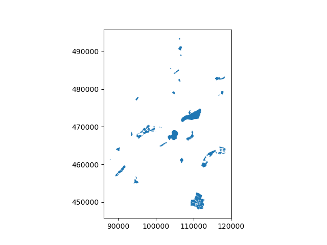
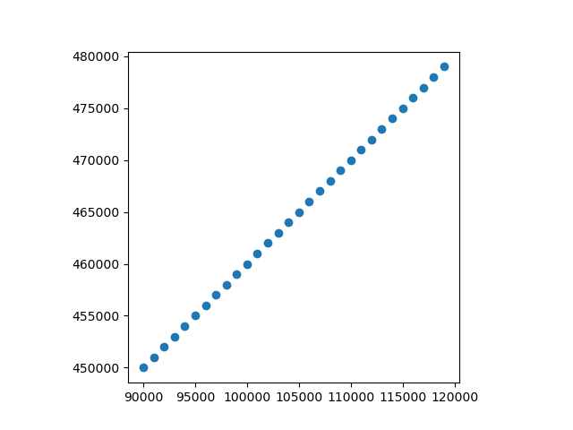

Note
Go to the end to download the full example code.
Vector data and Geopandas#
Geospatial data primarily comes in two forms: raster data and vector data. This guide focuses on the latter.
Typical examples of file formats containing vector data are:
ESRI shapefile
GeoJSON
Geopackage
Vector data consist of vertices (corner points), optionally connected by paths. The three primary categories of vector data are:
Points
Lines
Polygons
In groundwater modeling, typical examples of each are:
Pumping wells, observation wells, boreholes
Canals, ditches, waterways
Lakes, administrative boundaries, land use
These data consist of geospatial coordinates, indicating the location in space and a number of attributes: for a canal, this could be parameters like its width, depth, and water level. In GIS software like QGIS, the geometry is visible in the map view, and the attributes can inspected via e.g. the attribute table.
In Python, such data can be represented by a
geopandas.GeoDataFrame. Essentially, geopandas is a pandas
DataFrame to store tabular data (the attribute table), and adds a geometry
column to store the geospatial coordinates.
import geopandas as gpd
import numpy as np
import imod
tempdir = imod.util.temporary_directory()
gdf = imod.data.lakes_shp(tempdir / "lake")
gdf.iloc[:5, -3:] # first 5 rows, last 3 columns
This geodataframe contains all the data from the shapefile. Note the geometry column. The geometry can be plotted:
gdf.plot()

<Axes: >
A GeoDataFrame of points can also be easily generated from pairs of x and y coordinates.
x = np.arange(90_000.0, 120_000.0, 1000.0)
y = np.arange(450_000.0, 480_000.0, 1000.0)
geometry = gpd.points_from_xy(x, y)
points_gdf = gpd.GeoDataFrame(geometry=geometry)
points_gdf.plot()

<Axes: >
An important feature of every geometry is its geometry type:
gdf.geom_type
0 Polygon
1 Polygon
2 Polygon
3 Polygon
4 Polygon
...
72 Polygon
73 Polygon
74 Polygon
75 Polygon
76 Polygon
Length: 77, dtype: str
As expected, the points are of the type … Point:
points_gdf.geom_type
0 Point
1 Point
2 Point
3 Point
4 Point
5 Point
6 Point
7 Point
8 Point
9 Point
10 Point
11 Point
12 Point
13 Point
14 Point
15 Point
16 Point
17 Point
18 Point
19 Point
20 Point
21 Point
22 Point
23 Point
24 Point
25 Point
26 Point
27 Point
28 Point
29 Point
dtype: str
Input and output#
Geopandas supports many vector file formats. It wraps fiona, which in turns wraps OGR, which is a part of GDAL. For example, the lake polygons above are loaded from an ESRI Shapefile:
filenames = [path.name for path in (tempdir / "lake").iterdir()]
print("\n".join(filenames))
lakes.cpg
lakes.dbf
lakes.prj
lakes.shp
lakes.shx
They can be easily stored into more modern formats as well, such as GeoPackage:
points_gdf.to_file(tempdir / "points.gpkg")
filenames = [path.name for path in tempdir.iterdir()]
print("\n".join(filenames))
C:\pixi_envs\imod-python-1825887385235446013\envs\default\Lib\site-packages\pyogrio\geopandas.py:662: UserWarning: 'crs' was not provided. The output dataset will not have projection information defined and may not be usable in other systems.
write(
lake
points.gpkg
… and back:
back = gpd.read_file(tempdir / "points.gpkg")
back
Conversion to raster#
From the perspective of MODFLOW groundwater modeling, we are often interested in the properties of cells in specific polygons or zones. This often means having to rasterize shapefiles or sometimes polygonizing raster files. For examples, see Rasterize shapefiles and Polygonize raster.
GeoPandas provides a full suite of vector based GIS operations, such as intersections, spatial joins, or plotting.
MODFLOW 6#
iMOD Python’s MODFLOW 6 module requires vector line data for the horizontal flow barrier packages (HFB). The simplest form of such a package is to add a HFB package for a single layer. For that we have to create some linestrings first with shapely. Next, we need to assign data to the linestrings: a layer number and a resistance value.
from shapely import linestrings
from imod.mf6 import SingleLayerHorizontalFlowBarrierResistance
barrier_linestrings = linestrings(x, y)
geometry = gpd.GeoDataFrame(
geometry=[barrier_linestrings],
data={
"resistance": [100.0],
"layer": [1],
},
)
hfb = SingleLayerHorizontalFlowBarrierResistance(geometry)
hfb
You can see the GeoDataFrame has been converted to an xr.Dataset. To access the data as a geodataframe again use the line_data property:
hfb.line_data
Total running time of the script: (0 minutes 1.670 seconds)